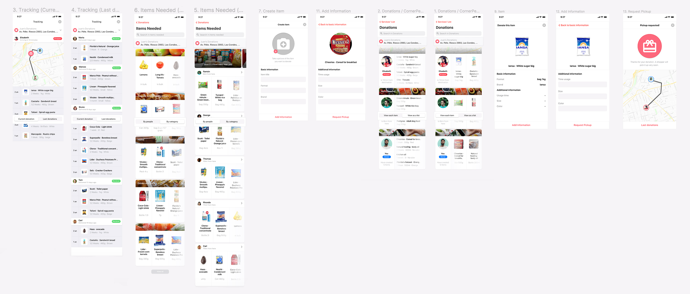
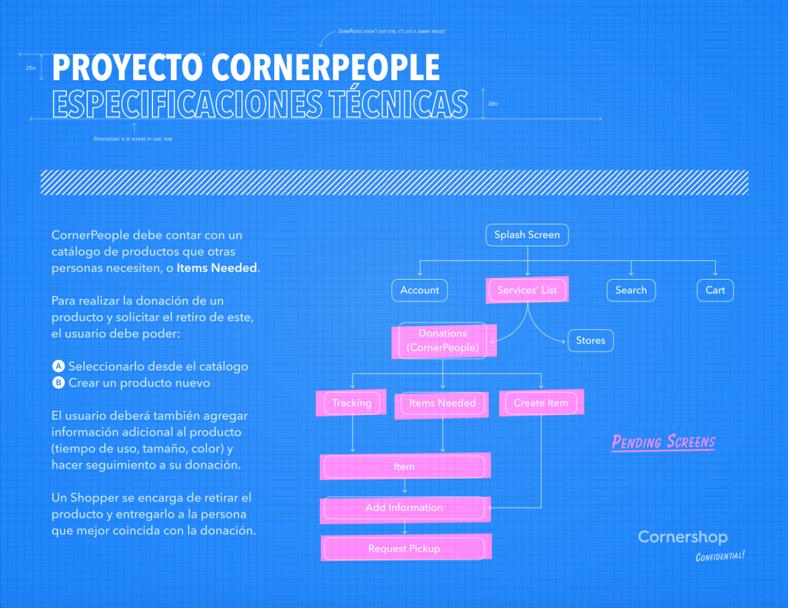
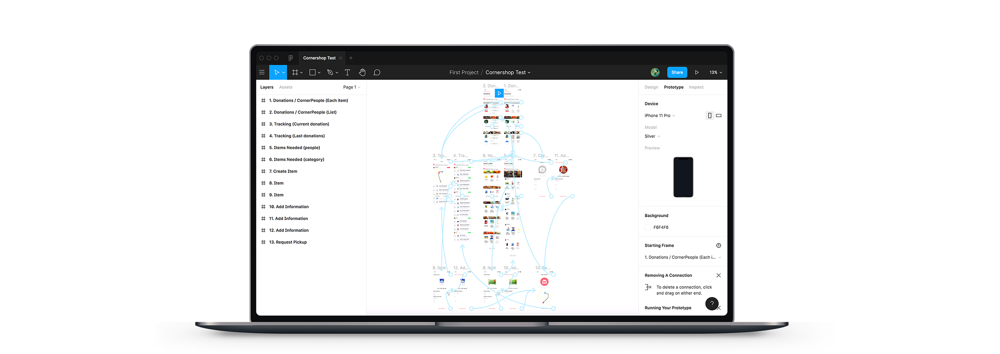

Cornershop
Technical test
— ConrerPeople
food donations
app testing new
feature
Ui Design Tachnical test — Juan A. Godoy
For the test i wasn't sure if it was required to adapt the design to the style-guide or if i had full freedom to work with. At the end i chose to stick to the guide provided in design.cornershop.io and focus on playing with how to display and interact with the content. I wanted to work with iOS movile device so i incorporated the styles from there (i could not use the SF Symbols because my machine had the outdated version and it required 10.14.4). I used the icons from Material even those are actually made for Android devices. I identify three main users of the App (the donor, the receiver and the shopper) and attached a graphic identity to each one. I played with more options to visualize the content (incorporating buttons in the bottom of the screen). Also there was implemented a new way to see the food elements (as a thumbnail / as written list with specifications). Finally, there was implemented the modality of uploading a new food element (that is not in the catalog) throught a picture taken by phone.
The device above shows the navigation of the implemented final design for the test. It goes through the donations page, items needed and the create an item section. It shows too the different possibilities on displaying the content.
The screen captures above show the numbers of pages created on Figma and how the UX/UI design was thought in terms of labeling, organization and displaying it as a map.
What was learned — in the process
1. Before starting any project in Figma is necessary to apply some good practices. One of them refers to the use of columns to generate a responsive behaviour all along when the viewport changes it's width.
2. It is important to understand the use of Components and Instances so design is sustainable, especially when working with many people in big scaled projects.
3. Is good to coustomize the styles to facilitate time in the design process. Everything labeled.
4. Images need to be used in the right size in order to display the preview of the design without any lag or delay.
5. Consider the programmer behind the project. To apply a well done jerarquy for the content is easy for him/her to work with.
6. Sometimes is just handy to know about different plugins available to approach interaction & design. This can save time and money for the future.
— Tracking
The tracking section shows the food elements that are being in process to be delivered by the shopper. The content can be read as a list and as a thumbnail. When read as a list it shows certain specifications as the time of used, quantity and color.
— Items needed
This section displays the items needed by someone in the app. As a receiver you are able to look for an specific element of food from the catalog and wait for a donor in order to get it. It shows the name of the receiver and the distance away from the donor who's looking at Items needed.
— Create Item
On this section you can create an item as a donor. That means the app allows you to upload a food element from the camera of your phone and post it in the app if it's not present in the catalog. It shows how many items you've created so far.
— Upload
Here you have the coice to upload a picture of any food you'd like to donate in the app and create it to make the catalog grow each time.
— Add Information
Here you can write the specifications of the food element you'd like to donate.
— Request a shopper
Once the item is created or chosen by the catalog plus adding the right specifications of usage, size (weight) and color, you're able to request a shopper to look for a receiver when necessary.
— Track donation
In this section the donor is able to check how far the receiver is from getting the donation while the shopper is on his/her way to deliver the package. it shows the approximate time that the food will arrive it's destination.